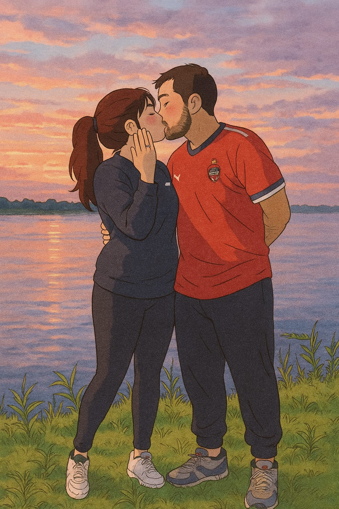
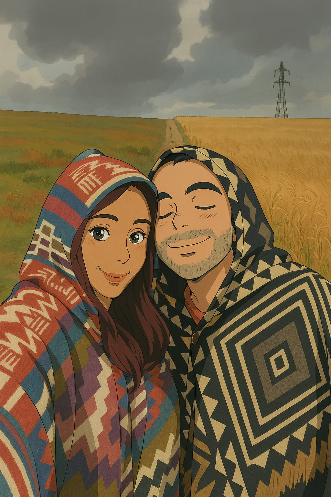

A veces, la vida nos lleva por caminos diferentes, pero siempre con la certeza de que lo que está destinado a suceder, sucede. Hoy celebramos no solo nuestro amor, sino el habernos encontrado entre tantas posibilidades, y convertir un futuro juntos.

Queremos que estés con nosotros en este día tan especial, porque una boda sin las personas que hacen cada momento único no sería lo mismo. Así que marca la fecha y prepárate para celebrarlo con nosotros.
Te esperamos en Restaurante Gourmet Barro Viejo, en Tabio, Cundinamarca.

¡Deja todo listo, que el gran día ya está cerca!